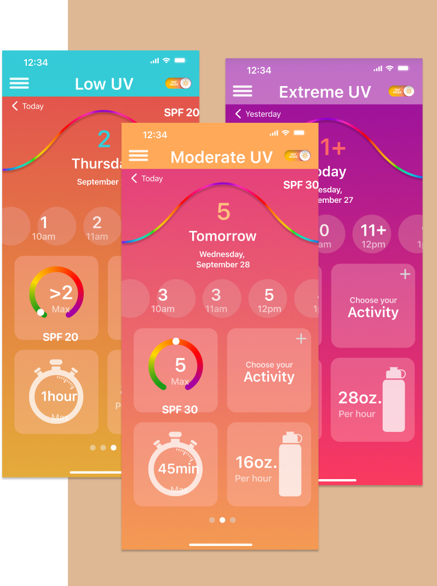
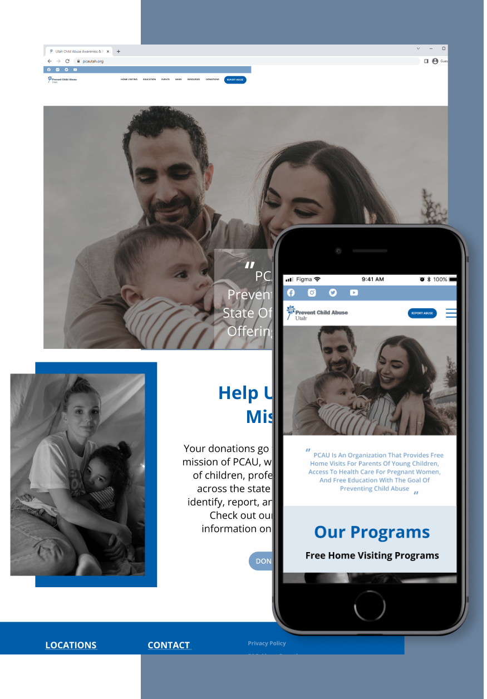

This conceptual project which runs for 4 weeks and is developed as a requirement of the UoU UX/UI design module. “TravelWise” helps modern international travelers to build unique conversational platform to share travel experiences with travel buddies and get all the updates, notifications, and alerts regarding upcoming trips by providing the facility to join and create travel itineraries with your friends and help you to get all the valuable information and suggestions.
“InSpectrum” is a fun and intuitive app that allows people to recapture their time they spend outside and is tailored to their personal characteristics and family skin health history.
As the sole product designer, I solved the key usability issues and revamped the visual style by re-imagining what it’s like for NSA’s users to use NSA. The new design reduced task times by 68% and improved users’ subjective satisfaction by 139%.
PCAU is dedicated to the prevention of child abuse in the state of Utah. The organization has various offerings in pursuit of that goal. Its name and branding do not readily indicate the services the non-profit provides.
